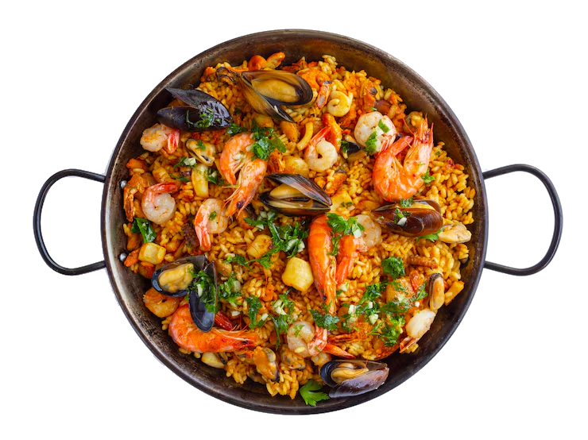

Paella Valenciana
Tiempo de preparación: 1 hora y 25 minutos Porciones: 12 Dificultad: Media
Ingredientes
- 300 gr de arroz de grano corto (variedad “bomba”)
- 400 gr de conejo troceado
- 400 gr de pollo troceado
- 150 gr de garrofón (judía verde especial)
- 150 gr de judía verde
- 1 pimiento rojo grande
- 2 tomates maduros
- 1 gr de azafrán
- 1,2 l de caldo de ave o pescado (aproximadamente)
- Aceite de oliva y sal a gusto
Preparación
- Calentar aceite de oliva en la paellera y sofreír el conejo y el pollo hasta que estén dorados. Retirar y reservar.
- En el mismo aceite, sofreír el pimiento rojo y el tomate picados hasta que se ablanden. Agregar el garrofón y la judía verde, y cocinar junto con las verduras.
- Añadir el azafrán y el arroz, y remover para que se impregnen con los sabores. Volver a incorporar el conejo y el pollo a la paellera.
- Verter el caldo caliente para que la paella tenga suficiente líquido para cocinar el arroz. Evitar revolver a partir de este punto.
- Cocinar la paella a fuego medio-alto hasta que el arroz absorba el líquido y esté tierno. A medida que se cocina, formará el socarrat en la base.
- Retirar la paella del fuego y dejar reposar durante unos minutos antes de servir.